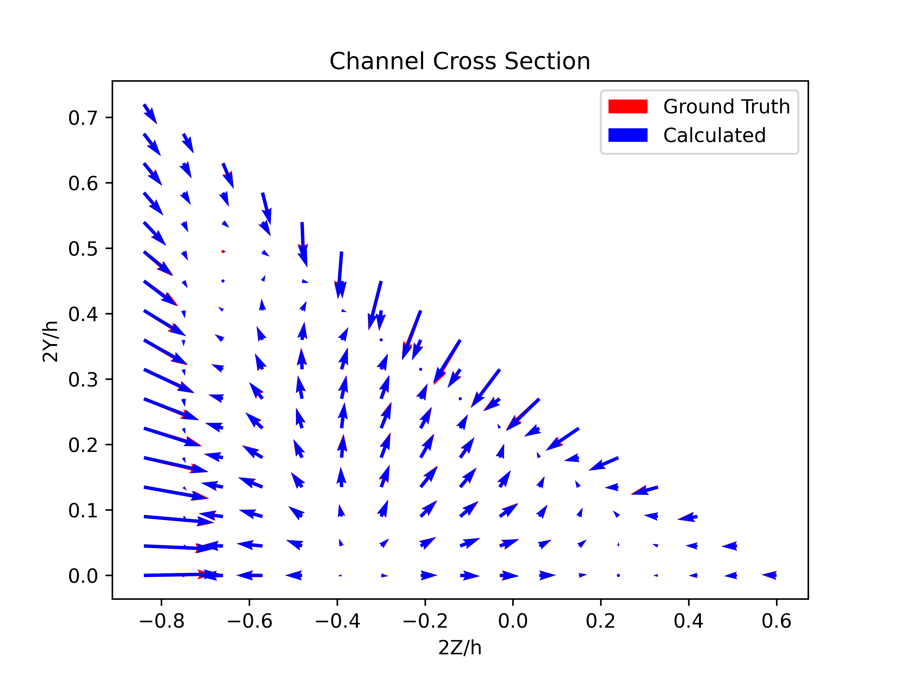
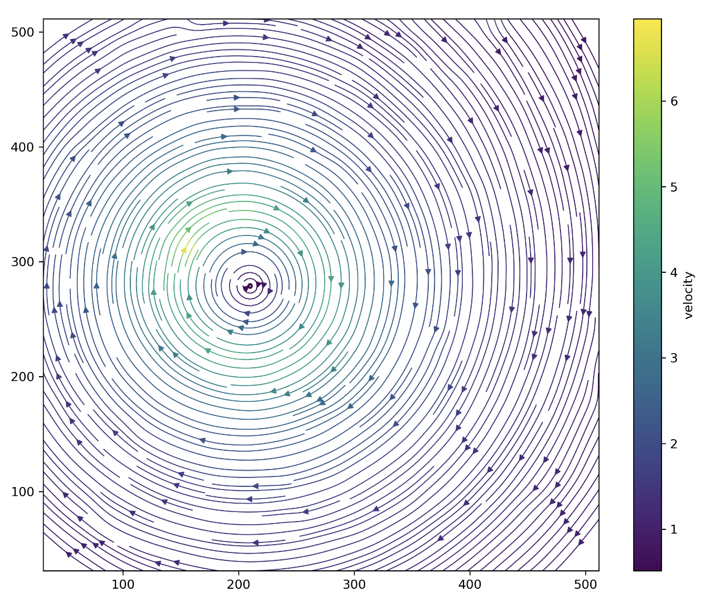
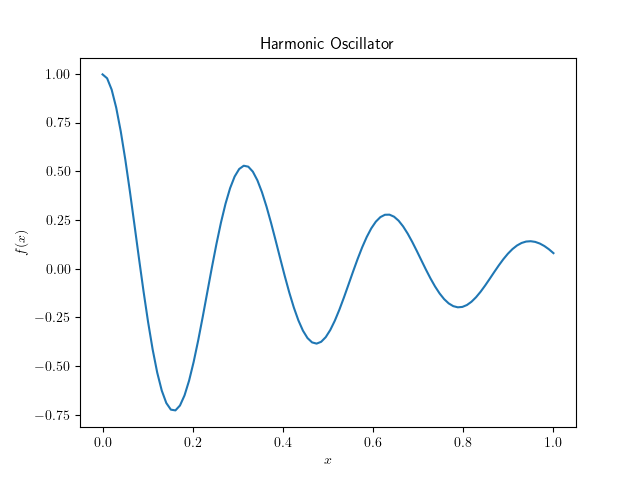
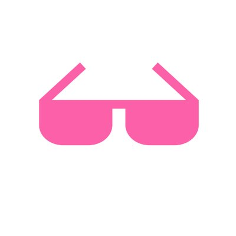
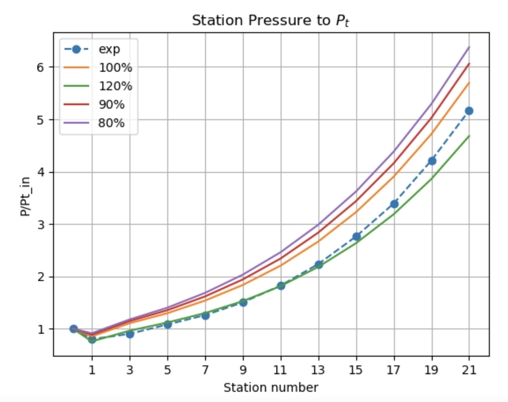

Mechanical Engineering student intrested in computational point of view 🔧+🧮
2021 - present
I am a Machine Learning Researcher at OPAL AI developing AI based floorplan generation from LiDAR scans.
2020 - present
I started my MS.c in ME at Sharif University of Technology.
2015 - 2019
I was BS.c student of ME at Tehran Polytechnic.
projects

microAI Is my first experience on deploying a Deep Learning model on production. This webapp uses Deep Learning to calculate the lift coefficients in microfluidic channel cross sections.
The model was developed using pyTorch
Created the API using gradio
Deployed on Huggingface

torchPIV Is an attempt to change the pyTorch Conv2D module in a way that fits the needs to be used for faster Particle Image Velocimetry.
2x Faster than a conventional program using for-loops.
Helped getting deeper on the mechanics of Conv2D kernels in pyTorch.

pinn-torch Is an ongoing project to re-implement every PDE solved using Physics Informed Neural Networks (PINNs) in pyTorch in a consistent way to be able to do parameter study.

awesome-pinn Is a curated list on the papers and other materials I found interesting and informative about Physics Informed Neural Networks (PINNs). feel free to make it more awesome!

Streamline Curvatuure Method OOP This was my Bs.c project. Streamline Curvature Method (SLC) is a Finite Difference method mostly used for fast and accurate quasi-2D simulation of fluid flows. In this project I got deeper into CFD and Object-Oriented programming.
Object Oriented Programming architecture was used to implement this method.
The finite difference equations were implemented in Vectorized form rather than using for-loops
The programming was done in a way so that it would be possible to implement different loss models easily.
lectures
Introductory course on ML and DL a case study on PINNs.